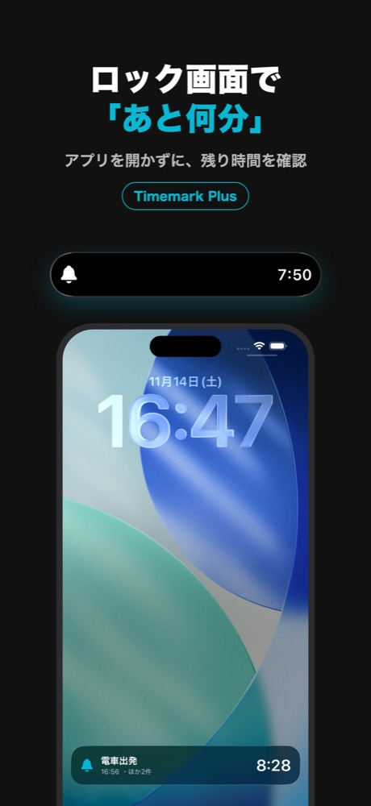
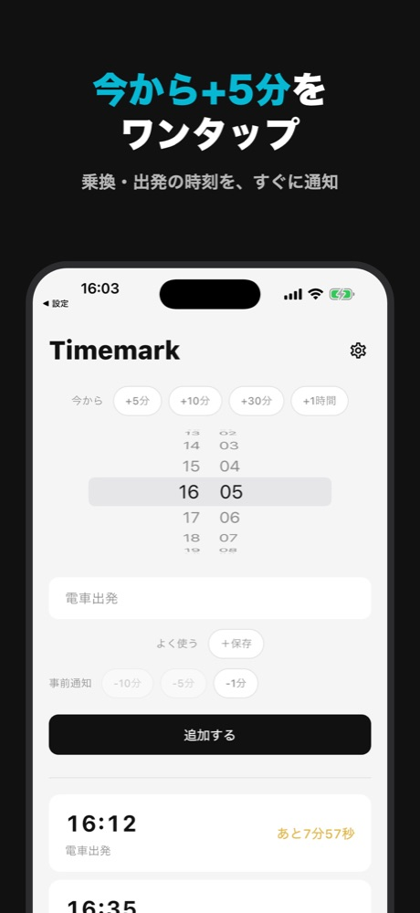
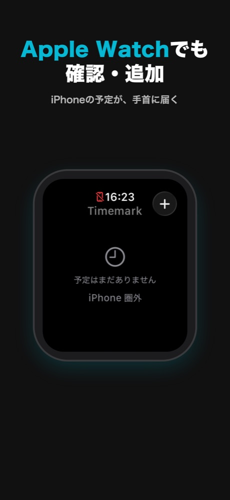

「今から何分後」を、
ワンタップで通知。
乗換・出発・会議の時刻を、すぐに入れて忘れない。
App Store で入手（無料）


01すぐ入力
「+5分」「+10分」「+30分」「+1時間」をタップするだけで時刻が入り、その時刻に通知します。
02ロック画面で「あと何分」
次の予定と残り時間を、ロック画面とダイナミックアイランドに表示。アプリを開かずに確認できます。
Timemark Plus03Apple Watch 対応
手首で予定を確認できます。Watch から追加・削除もできます。